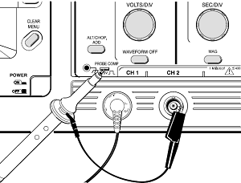
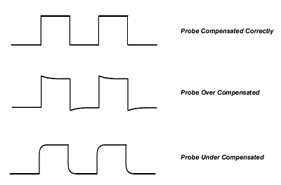
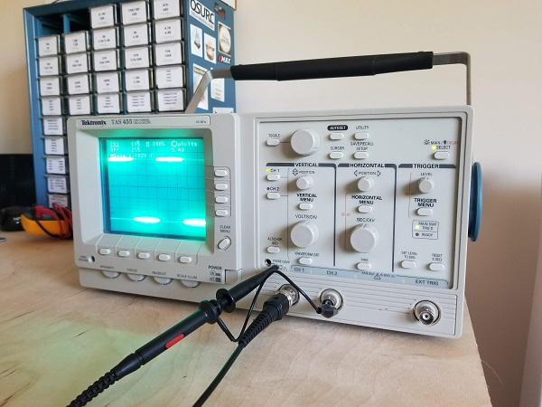

We’ll be going over how to get up and running with an oscilloscope and preform some basic operating procedures. However, for you young gamers, it’s worth going over what an oscilloscope is and what it’s used for; get some context first. An Oscilloscope is a tool that graphs an electrical signal. It’s a very powerful troubleshooting tool to verify that your signal is not getting distorted in your circuit. It is a tool used for monitoring and is also capable of performing operations on your generated waveform, such as waveform math, calculate frequency, rise and fall time, etc. Oscilloscopes graph on an XYZ region with X being time, Y being Voltage, and Z being Intensity of the signal. For a helpful pocket guide check out this document from Tektronix [link]. The particular scope I will be using is the TAS 455 by Tektronix however, the terminology used will apply to virtually any scope you come across. The TAS 455 is a 2 channel/60MHz minimum bandwidth analog scope released by Tektronix in 1992. This scope coexisted with some digital scopes but was still an option due to the limited resolution of digital scopes at that time. The scope measures about 18” inches front to back! An absolute beast.
There you go! With channel one being the only active channel you are a step closer to get to proper measurement. Next, we will compensate the probe to ensure it is not giving bad readings.

 After those steps the probe should be properly compensated and have very little room for error, but before we move on we used a rather complex and important button on the scope that deserves explanation, the AUTOSET button. The AUTOSET is analogous to an autofocus so you can see at least one full cycle of your waveform. If you are connected to a signal that doesn’t seem to have any reading, pressing AUTOSET may reveal the proper setting for that particular waveform. AUTOSET basically alters many of the oscilloscope operating systems for you. These systems include:

Do NOT put all your faith in the AUTOSET! Be sure you double check the settings that will be critical to your measurement.
Now that we’re up, running, and the probe is compensated, let’s try out some basic operations!